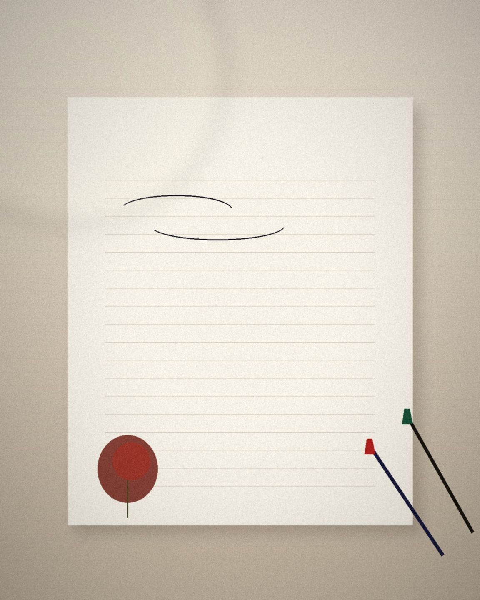

IMMERSIVE SCROLL ALBUM
把伞偏向你
暖纸、衬线、一条手绘红线。开场名字逐字装配，照片带着纸的厚度进入，情书在最后慢慢展开。手机是完整的竖向相册，桌面多一层折信与 3D 让位。
暖纸 / 干玫瑰Source Serif + Noto SerifGSAP ScrollTrigger逐字遮罩
打开样张下载离线 zip
 A · 沉浸滚屏相册
A · 沉浸滚屏相册可以换名字、日期、情书和照片的离线单页。不是商品页，也不是产品介绍——打开就是给对方的纪念。三套做法、三种气质，买回去改 config.js 和 photos/ 就能用。
样张人物为虚构的周予安与梁清和 · 插画无面部 · 不涉及真人照片
IMMERSIVE SCROLL ALBUM
暖纸、衬线、一条手绘红线。开场名字逐字装配，照片带着纸的厚度进入，情书在最后慢慢展开。手机是完整的竖向相册，桌面多一层折信与 3D 让位。
A · 沉浸滚屏相册RELATION MAP · CANVAS 2D
把日子排成一张可以走的地图。八个站，两条支线，点开一站就翻开那天的照片和短句。Canvas 2D 完整可拖动、可缩放、可键盘换站，不靠 WebGPU。
 B · 关系图谱
B · 关系图谱3D KEEPSAKE · OKLCH CHAPTERS
一枚原创的椭圆锁骨盒。往下滚，镜头靠近刻字，盒盖打开，露出里层那句；每章背景用 oklch 换色温。信物是代码里搭的几何，没有外部模型。

C · 三维信物config.js，改名字、日期、短句、情书和每张照片的说明。photos/，建议 4:5 竖图、单张 200–500 KB。index.html。不需要服务器，也不需要联网。